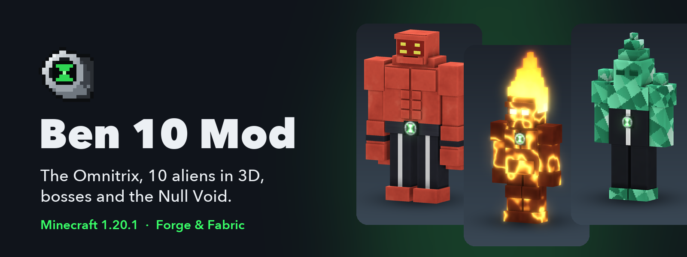

Find or craft the watch
Look for a crash-site pod or make the Omnitrix Core and watch in the Crafter.
How to get itFind the crashed watch or build one in the Omnitrix Crafter. Unlock ten classic aliens, then follow the trail from a Kraab hunter to the Null Void.
Minecraft 1.20.1 · Ben 10 Mod 2.1.0 · Forge, NeoForge and Fabric

Look for a crash-site pod or make the Omnitrix Core and watch in the Crafter.
How to get itRight-click the watch once. It stays equipped to your player.
How the watch worksPress G or right-click the air with an empty hand to open the dial.
Browse all ten aliensFind or build the watch, bind it, and open the dial.
Transformation time, recharge, Master Control and creative mode.
Browse forms, passive abilities, powers and DNA sources.
Search the mod's item and block registry with source recipes and drops.
Browse all current Crafter, crafting-table, smelting and blasting recipes.
See ore placement data and the current armour set bonuses.
Find Kraab, summon Vilgax and follow the trail to Zs'Skayr.
Enter through the Projector and explore the floating islands.
Future releases from the project plan, marked as planned.
The Null Void is now a more dangerous place to explore, with new creatures, prison structures and Plumber gear. Version 2.1.0 targets Minecraft 1.20.1. The mod supports Forge, NeoForge and Fabric, and requires GeckoLib. Fabric installs also need Fabric API.